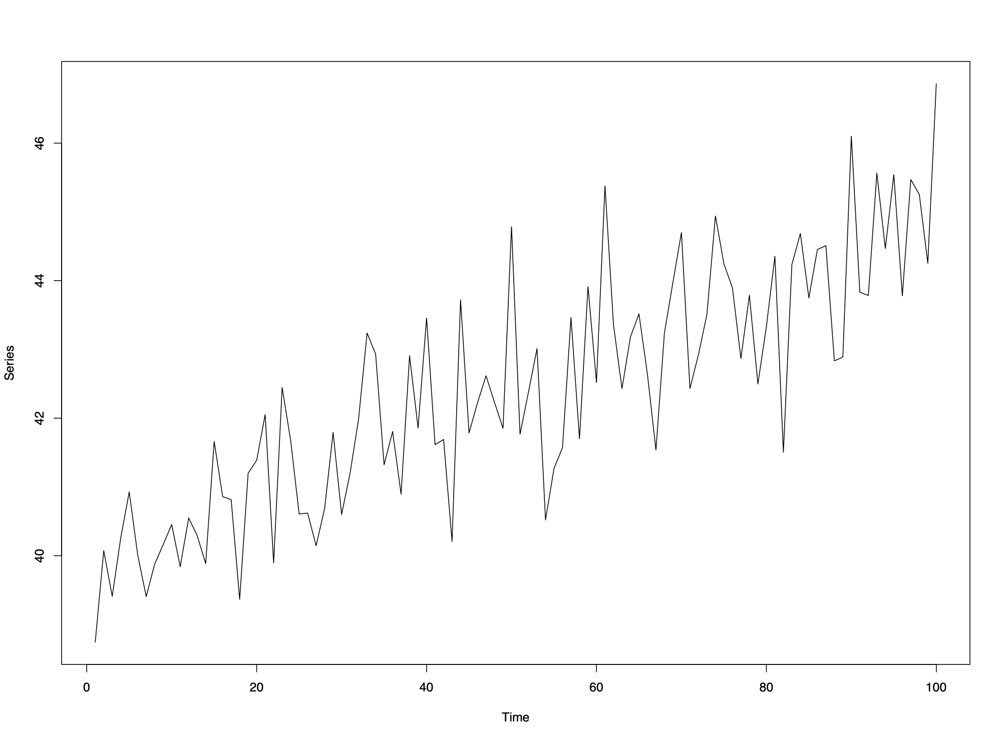
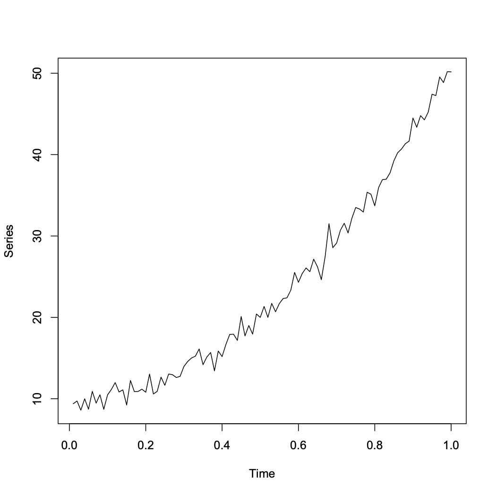
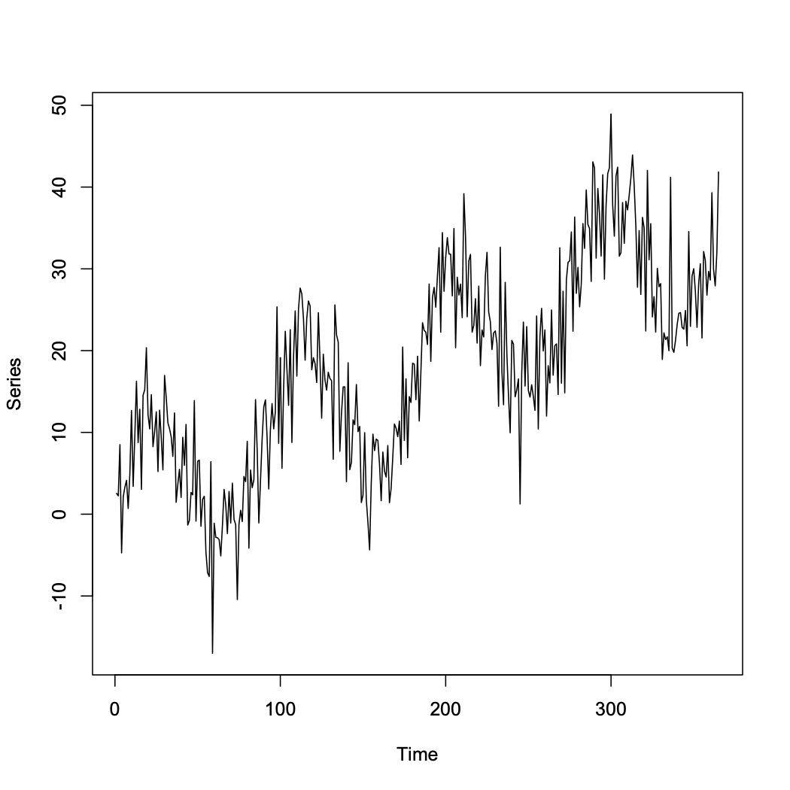
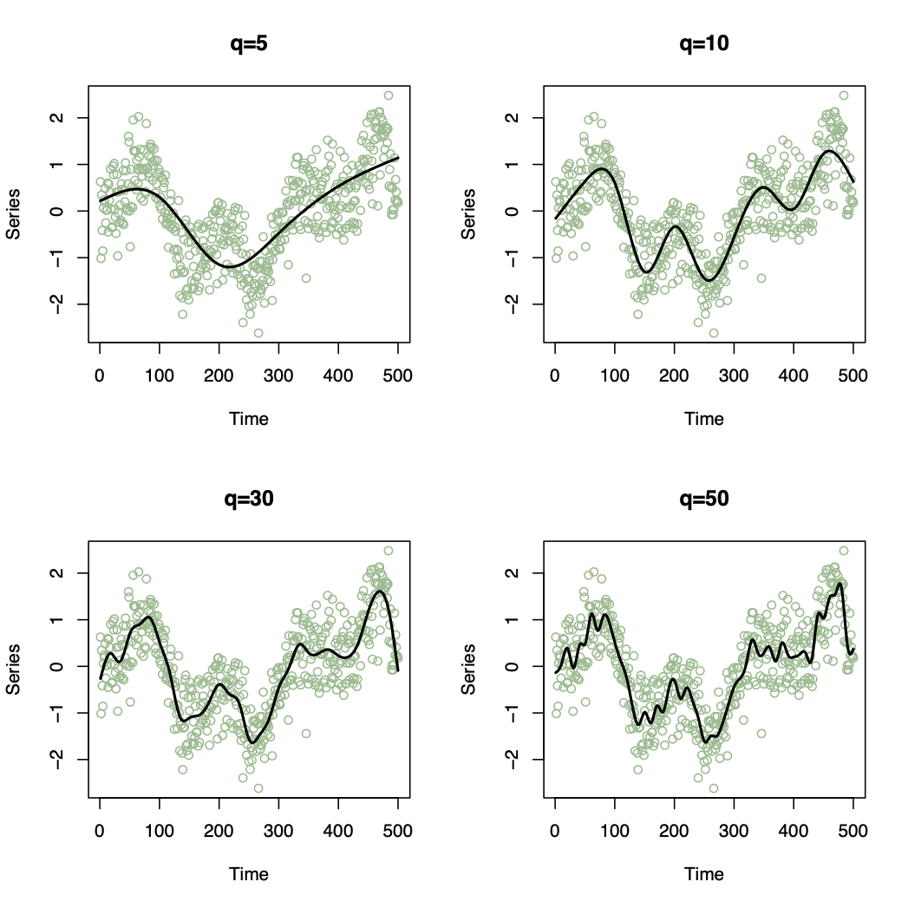

2 Chapter 2: Modelling trends and seasonal patterns
Trend and Seasonality can be the main interests
Need to remove trend and seasonality to determine short-term correlation
For this chapter, assume additivity: \(X_t=m_t+s_t+e_t\) (Refer to Ch.1)
First is to estimate the trend and seasonal variation \(\hat m_t+\hat s_t\), then calculate the residual series \(e_t^*=X_t-\hat m_t-\hat s_t\)
3 of the most common methods for modelling trend and seasonality are described here.
2.1 Method 1: Regression
\[m_t+s_t=\beta_0+\beta_1z_{t1}+...+\beta_pz_{tp}\] Cons: OLS estimation assumes observations are independent. Pros: Remove trend to later model the correlation by a stationary time series process
\(z_{tn}\) are often functions of time
2.1.1 Examples
2.1.1.1 Linear trend in time but no seasonal variation:

Trend can be modelled by \(X_t=\beta_0+\beta_1t+e_t\) and using series \(e_t\) to analyze short-term correlation
2.1.1.2 Quadratic trend in time but no seasonal variation:
 Trend can be modeled by \(X_t=\beta_0+\beta_1t+\beta_2t^2+e_t\)
2.1.1.3 Seasonal pattern in time and a linear trend with 365 data points:
 Trend and Seasonality can be modeled by \(X_t=\beta_0+\beta_1t+\beta_2sin(8\pi t/365)+e_t\)
2.1.2 Other common models
2.1.2.1 Other Covariates
\[m_t=\beta+0+\beta_1\alpha_t\]
2.1.2.2 Polynomials
\[m_t=\beta+0+\beta_1t+\beta_qt^q\] Higher \(q\), more flexible the trend
2.1.2.3 Harmonics
\[s_t=\beta_0+\sum_{i=1}^q\beta_{1i}sin(w_it)+\beta_{2i}cos(w_it)\] Harmonics assume the seasonal pattern has a regular shape, i.e. the height of the peaks is the same as the depth of the troughs.
2.1.2.4 Seasonal Factors
Assuming the seasonal pattern repeats itself every d time points, a less restrictive approach is to model it as:
\[s_{t}=\left\{\begin{array}{cc}0&\mbox{if}~t=1, d+1, 2d+2,\ldots\\ s_{2}&\mbox{if}~t=2, d+2, 2d+2,\ldots\\ \vdots&\vdots\\ s_{d}&\mbox{if}~t=d, 2d, 3d,\ldots\\\end{array}\right.\]
This model can be fitted by creating \(d - 1\) dummy variables in the design matrix, that contain 1’s and 0’s.
2.1.2.5 Natural cubic splines (More flexible)
\[m_{t}+s_{t}=\beta_{0}+\sum_{i=1}^{q}\beta_{i}B_{i}(t)\] 
2.2 Method 2: Moving Average Smoothing
A Moving average smoother estimates the trend and seasonal variation at time t by averaging the current observation and the q either side
\[\hat{m}_{t}+\hat{s}_{t}=\frac{1}{2q+1}\sum_{j=-q}^{q}x_{t-j}\] Note: Shorten length of time series by \(2q\), therefore if the trend is smooth and \(q\) is large, the series shortens significantly.
2.3 Method 3: Differencing
2.3.1 Remove Trends
2.3.1.1 First order difference operator \(\nabla\):
\[\nabla X_{t}=X_{t}-X_{t-1}=(1-B)X_{t}\]
where \(B\) is the Backshift operator defined as \(BX_{t}=X_{t-1}\)
2.3.1.2 General order difference operator \(\nabla^q\)
\[\nabla^{q} X_{t}=\nabla[\nabla^{q-1}X_{t}]\] \[B^{q}X_{t}=X_{t-q}\] Notes: 1. A polynomial trend of order \(q\) can be removed by \(q^{th}\) order differencing 2. Typically only first or second order differencing is required 3. Shortens length by \(q\) 4. Differencing won’t allow to estimate the trend but only to remove it.
2.3.2 Remove Seasonality
The seasonal difference of order \(d\) is the operator \(\nabla_d\) given by \[\nabla_{d} X_{t}=X_{t}-X_{t-d}=(1-B^{d})X_{t}\] Notes: 1. Trial and Error approach 2. No point differencing twice if once is adequate 3. Differencing increases the variance
2.4 Choosing a smoothing parameter
2.4.1 Simplicity
Simple statistical models are preferred since they are easier to make inferences from.
2.4.2 Objective criteria (AIC & BIC)
Assumptions: 1. Normally distributed observations 2. \(m_{t}+s_{t}=\textbf{z}_{t}^\top \boldsymbol{\beta}\)
where \(\textbf{z}_{t}^\top\) is a vector of \(q-1\) known covariates and a one to represent the intercept term
2.4.2.1 Akaike’s Information Criterion (AIC)
\[\mbox{AIC}(q)=-2\mathcal{L}(\mathbf{x}|\hat{\boldsymbol{\beta}}) + 2q\]
2.4.2.2 Bayesian Information Criterion (BIC)
\[\mbox{BIC}(q)=-2\mathcal{L}(\mathbf{x}|\hat{\boldsymbol{\beta}}) + \ln(n)q\]
where \(\mathcal{L}(\mathbf{x}|\hat{\boldsymbol{\beta}})\) is the maximised log likelihood function of \(\mathbf{x}\)
Both criteria tradeoff the fit to the data against simplicity (i.e. few parameters), and small values suggest a good fit to the data.